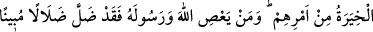

ALLAH VE RASÛLÜ
BİR İŞE HÜKÜM VERDİĞİ ZAMAN
35. Müslüman erkekler ve müslüman kadınlar, mü’min erkekler ve mü’min
kadınlar, tâate devam eden erkekler ve tâate devam eden kadınlar, doğru erkekler
ve doğru kadınlar, sabreden erkekler ve sabreden kadınlar, mütevazi erkekler ve
mütevazi kadınlar, sadaka veren erkekler ve sadaka veren kadınlar, oruç tutan
erkekler ve oruç tutan kadınlar, ırzlarını koruyan erkekler ve ırzlarını koruyan
kadınlar, Allâh’ı çok zikreden erkekler ve çok zikreden kadınlar var ya; işte Allah,
bunlar için bir mağfiret ve büyük bir mükâfat hazırlamıştır.
36. Allah ve Rasûlü bir işe hüküm verdiği zaman, inanmış bir erkek ve kadına o
işi kendi isteklerine göre seçme hakkı yoktur. Her kim Allah ve Rasûlüne karşı
gelirse, apaçık bir sapıklığa düşmüş olur.
37. (Rasûlüm!) Hani Allâh’ın nîmet verdiği, senin de kendisine iyilik ettiğin